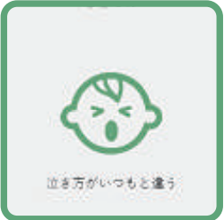
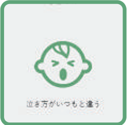

診察内容
子供達の健康に関わることは、全てご相談ください。
赤ちゃんの皮膚のことや便秘のこと、発熱や咳、嘔吐や下痢などの感染性の症状から、喘息や鼻炎など
アレルギーに関連した症状など、気になることがあれば、お気軽にご来院ください。
こどもによく見られる症状
 

トリアージ
看護師さんが、お子様の状態をまず把握し、詳しいお話をお聞きします。小児科の経験の 長い看護師、子育て経験の豊富な看護師さんが揃っています。
気管支喘息・気管支炎のための吸入治療
咳やゼイゼイが長く続くお子様のために、その原因の検索や、吸入器を用いた吸入療法 を、お子様の病態にあわせて考えます。家庭内でも吸入が必要と思われた場合は、貸し 出すこともあります。
感染症に応じた対応
様々な感染症に対応するため、個室で診察、その他にも点滴ベッド、持続点滴ポンプを準備し、できる限りの診断と、診断に沿った治療ができるように心がけています。コロナウイルス感染に伴い、発熱や咳の患者様はすべて個室対応となっています。
またスタッフも感染防御の体制をとっています
点滴療法
おしっこの検査などを用いて、脱水の判断をします。重症の場合は、点滴をします。赤ちゃん にも対応できるように、点滴ポンプをそろえています。
学校医・保育園嘱託医
街のこどもたちが元気に過ごせるように学校・保育園の検診も積極的に行っています。
検診で異常が見つかった際の二次検査も行っています。
まずはスタッフまでお気軽にお問い合わせください。
| 学校医 | 今宿小学校 |
| 幼稚園・保育医 | あたごはま幼稚園、内浜保育園、成徳保育園 あおぞら保育園 プティット保育園 |
紹介先病院
より高度な治療が必要と判断した場合、入院治療が必要な患者さんにつきましては
以下の病院を紹介いたしますので、ご安心ください。
福岡市立こども病院、浜の町病院、福岡大学西新病院、国立療養所福岡病院
九州医療センター、福岡大学病院、九州大学病院 など